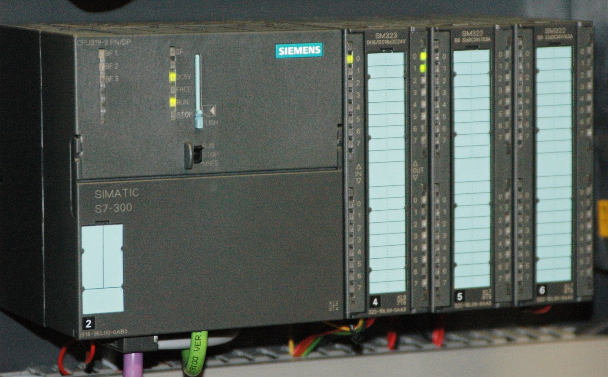
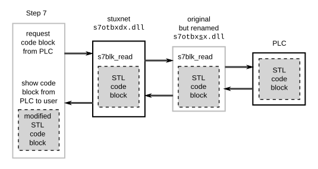

Savvy Security LLC · Threat Research
The Payload Was the Easy Part
Stuxnet was a human intelligence operation with software attached — and we've spent fifteen years learning the wrong lesson from it.
Every part of the popular Stuxnet story is true — four zero-days, a PLC rootkit, centrifuges tearing themselves apart. It is also badly incomplete. Because before any of that code ran, someone had to carry it inside.
Ask a room of security professionals what Stuxnet was and you'll get a remarkably consistent answer. Four Windows zero-days. A PLC rootkit. Centrifuges torn apart by their own drive systems while the operators watched a screen full of green. The first true cyber weapon, delivered across an air gap by code so sophisticated it took the industry months to understand what it was even for.
Every part of that is true. It is also, as an account of what happened at Natanz, badly incomplete — and the missing part is the part that matters for defending American infrastructure.
Because before any of that code ran, someone had to carry it inside.
I. What the reporting established
In January 2024, the Dutch newspaper De Volkskrant published the results of a two-year investigation involving interviews with dozens of sources. It named the man.
Erik van Sabben was a Dutch civil engineer, born in 1972, working for TTS International — a Dubai-based heavy transport firm that supplied parts to Iran's oil and gas sector. He was married to an Iranian woman. He traveled to Iran regularly on legitimate business. According to the reporting, the Dutch intelligence service AIVD recruited him in 2005, years before the malware was triggered, after American and Israeli services approached their Dutch counterparts for help gaining access to Natanz [1].
The profile was the qualification. Technical background, established commercial presence in-country, family ties, a plausible reason to be moving industrial equipment across the border. He wasn't a cyber operator. He was a logistics engineer who could get a pump into a building.
In 2007, per the investigation, van Sabben infiltrated the Natanz complex and delivered the malware on water pumps he installed at the facility [1][2]. Earlier reporting had described a USB drive, and the sourcing hedges between the two — one account quoted in the Dutch coverage says "a USB stick or possibly a water pump" [3]. The delivery mechanism is unsettled. The delivery method is not: a human being with authorized physical access carried it through the door.
The supporting infrastructure was substantial. AIVD reportedly stood up two front companies for the sole purpose of gaining access to the complex; one of them, an installation firm supplying peripheral equipment, succeeded [4].
Two details are worth sitting with.
First, the oversight failure. AIVD never informed the Dutch government. Dutch politicians learned about their country's role in the most consequential cyber operation in history from a newspaper, roughly seventeen years later [5]. Van Sabben and his handlers reportedly did not know the specifics of the operation or the nature of the software — only that it would delay Iran's nuclear program [2].
Second, the cost to the asset. In December 2008, during a year-end visit to his wife's family in Iran, van Sabben appears to have become alarmed. A day into the trip he wanted to leave the country. Two weeks later, on 16 January 2009, he died in a motorcycle crash near his home in Dubai [2]. The UAE ruled it an accident, and there is no confirmed evidence otherwise — but the death prompted questions inside Dutch intelligence about whether it was connected to his work [6].
Source discipline note: this is investigative journalism, single-outlet, with no government confirmation. De Volkskrant is a serious publication and the investigation is substantial, but treat it as reporting, not as documentary record. Separately, the $1–2 billion development cost figure that appeared in the same coverage is disputed — WithSecure's Mikko Hyppönen has publicly doubted it [2]. Don't repeat it as established.
II. The intelligence requirement dwarfed the engineering requirement
The human delivery story is only half the argument. The other half was hiding in plain sight in a 2010 assessment that most Stuxnet coverage cites for one number and ignores entirely for its actual finding.
The Institute for Science and International Security is where the widely repeated "1,000 centrifuges damaged" figure comes from — a preliminary assessment, so labeled by its authors, covering November 2009 to late January 2010 [7]. That number has hardened into received wisdom through repetition, and a substantial peer-reviewed literature disputes it. Ivanka Barzashka's analysis in the RUSI Journal argues the evidence of actual impact is circumstantial and inconclusive, that the 2009 variant was neither particularly effective nor well-timed, and that the operation may in hindsight have been of net benefit to Tehran [8].
But bury the damage debate for a moment, because ISIS made a second finding that nobody argues with and almost nobody quotes.
Whoever launched the attack, they wrote, possessed a surprising quantity of confidential operational detail about the facility — far more inside information than IAEA reporting could supply. Intelligence services needed to penetrate both the plant's internal operations and the network of Iranian procurement companies that illicitly obtained Siemens control equipment and prepared it for delivery to the centrifuge program [9].
Read that again with a defender's eye.
The attackers knew the cascade topology. They knew which controller families sat on which subsystem. They knew the process parameters well enough to design an overpressure attack against the Cascade Protection System and, later, a resonance attack against the Centrifuge Drive System. Ralph Langner's To Kill a Centrifuge — still the best technical analysis ever written on this malware — reached its conclusions precisely by combining code reverse-engineering with plant design intelligence and uranium enrichment process knowledge [10]. He needed all three. So did the attackers.

Symantec's team was explicit about why. Their reverse engineers extracted and converted the entire injected payload from MC7 bytecode back to readable STL — and then hit a wall. STL sets an address to a value. Whether a pump, a conveyor, or a centrifuge sits behind that address is not visible anywhere in the code [11].
That gap is the whole operation. Closing it required years of human intelligence work against a hardened target and its supply chain. The malware was what you build after you already know everything.
III. The malware archaeology agrees
Here's where it gets genuinely satisfying, and where the two evidentiary streams — journalism and reverse engineering — corroborate each other without ever having been designed to.
At RSA 2013, Symantec announced it had recovered the earliest known variant of the malware, designating it Stuxnet 0.5 and calling it "the missing link." It had been sitting in a public malware scanning service since 2007, unrecognized for six years. C2 domains for it were registered in late 2005 [12][13].
Stuxnet 0.5 is nothing like the version the world met in 2010:
| Stuxnet 0.5 | Stuxnet 1.x | |
|---|---|---|
| Platform | Flamer | Tilded |
| Microsoft zero-days | None | Four |
| Propagation | Step7 project files only | LNK, print spooler, network shares, Step7, P2P |
| Target | S7-417, valve states | S7-315, rotor speeds |
| Delivery | Physical | Autonomous once seeded |
Stuxnet 0.5 exploited zero Microsoft vulnerabilities and propagated through exactly one mechanism: infection of Siemens Step7 project files [14]. It had no way to cross a network on its own. It could not reach Natanz by any route except a human hand.
Its payload was the fully operational 417 valve attack — the one that exists only as disabled dead code inside the 1.x versions Langner analyzed. Symantec's description: it lay dormant until enrichment began, captured a series of snapshots of the control screen under normal operation, inventoried the system, then manipulated the valves feeding uranium hexafluoride into the centrifuges — holding them open for six minutes while replaying the captured normal-operation displays, then shutting down and returning to hiding [15].
Now put the two streams together.
Kaspersky's Costin Raiu observed, when the van Sabben story broke, that the version delivered in 2007 was plausibly Stuxnet 0.5 [2]. He was reasoning from the reporting. But the malware itself independently demands the same conclusion: a variant with no network propagation and no exploits, active in exactly that window, could only have arrived by physical delivery.
The journalism and the binary analysis were produced by different people, seventeen years apart, working from completely unrelated evidence. They land on the same operation.
That's about as strong as corroboration gets in this field.
IV. So what was the second version for?
If 0.5 was hand-delivered, why did 1.x need four zero-days and five propagation vectors?
Langner's answer, from the code itself, is the one that should worry American defenders most. The propagation routines in the later dropper are carefully constrained — they never attempt to reach random targets, never generate random IP addresses, and operate only within what the attackers modeled as a trusted network boundary [16]. This wasn't a worm built to spread. It was a worm built to re-establish access that had been lost.
Something happened to the human channel. Van Sabben died in January 2009. Stuxnet 1.x appeared that same year, engineered to propagate autonomously inside a defined perimeter.
And then it escaped — not because the containment logic failed, but because the trust model underneath it did. Contractors who work at Natanz also work for other clients. They carried infected laptops out with them [16].
That is the sentence to underline. The most carefully scoped cyber weapon ever built escaped because the humans crossing its boundary had other jobs.
V. Why this is a domestic problem
The concern I hear most from people in this industry — and the one that prompted this piece — is that nation-state tooling gets turned back on us. That fear is correct, but the mechanism is usually described wrong, and the wrong version is easy to dismiss.
The wrong version: someone recovers Stuxnet, recompiles it, points it at a water treatment plant in Florida.
That's not the threat. Fifteen years on, there is no documented case of Stuxnet's PLC payload being reused wholesale. The definitive-seeming counterexample, IronGate, doesn't survive scrutiny: FireEye's FLARE team found no code ties to Stuxnet whatsoever, it targeted a Siemens simulation environment rather than a production one, and Siemens ProductCERT confirmed it wasn't viable against operational control systems [17][18]. What made IronGate interesting was that it independently reimplemented the deception concept — recording five seconds of normal PLC traffic and replaying it to the operator interface while feeding different data to the controller [17]. Same idea, built from scratch, by someone unknown, uploaded to VirusTotal from Israel in 2014 and never explained [19].
That's the actual pattern. The concept propagates. The code doesn't.
Dragos's count puts PIPEDREAM as the seventh known ICS-specific malware family, following Stuxnet, Havex, BlackEnergy 2, CrashOverride/Industroyer, TRISIS/TRITON, and Industroyer2 [20]. Every one is an independent build. And the trajectory is not reassuring: TRITON, in 2017, was the first publicly known malware to specifically target Safety Instrumented Systems — the autonomous controllers that monitor temperature and pressure and halt the process before people die [21]. Mandiant assessed PIPEDREAM as very likely state-sponsored and directly comparable to TRITON, INDUSTROYER, and STUXNET, with scenarios including disabling safety controllers to cause physical destruction [22].
Here's the right version of the fear. The transferable asset from Natanz was never the binary. It was the demonstration that four preconditions, assembled together, produce physical destruction:
- A human with authorized physical or logical access.
- Detailed engineering knowledge of the target process.
- Interposition on the trust path between operator and controller.
- Falsification of the operator's view of physical state.
None of those four is Iranian. None is Siemens-specific. None is patched.
And the United States is, structurally, a softer target for that combination than Natanz was. Natanz was air-gapped, guarded, and adversarial to every foreign national who walked in — and it still fell to an engineer with a work order. American water, power, and pipeline operators run flatter networks, deeper contractor bench, remote vendor access as standard practice, and legacy Windows in OT that persists for validation reasons rather than negligence. The distribution data on the LNK vulnerability is instructive on that last point: at the peak of its exploitation, 64% of affected machines were still running Windows XP [23].
That prepositioning is not hypothetical. The state-sponsored intrusions into U.S. critical infrastructure disclosed in recent years — actors establishing quiet, persistent access in power, water, and communications networks without immediately acting on it — are the reconnaissance phase of exactly this pattern. Access first. Process knowledge second. Payload last, and only if needed.
VI. The patch that wasn't
There's one more piece of this story, and for practitioners it may be the most operationally useful thing in the entire Stuxnet corpus. It is also the strongest evidence for the specific fear that old nation-state vulnerabilities come back around.
CVE-2010-2568 — the LNK parsing flaw — worked because Windows let shortcut files pull custom icons from .CPL files, which are themselves DLLs. Control which module gets referenced, and you control which code Windows loads. No click required. Merely opening the folder was enough [24].
Microsoft patched it in August 2010 via MS10-046, adding a whitelist check so only approved .CPL files could supply non-standard icons [25].
The patch didn't work.
HP's Zero Day Initiative established in 2015 that for more than four years, every Windows system had remained vulnerable to substantially the same attack Stuxnet used for initial deployment. The bypass got its own identifier, CVE-2015-0096, and was finally addressed in MS15-020 — five years after the original bulletin. ZDI further noted that the registry workaround Microsoft had recommended back in 2010 still didn't fully hold [26].
During those years of false assurance, the vulnerability became the most exploited flaw on earth. Kaspersky logged over 50 million detections across more than 19 million machines between July 2010 and May 2014 [27]. Microsoft's own Security Intelligence Report named it the most commonly targeted vulnerability of 2015 [28]. By 2016, 27% of Kaspersky's user base had encountered it [29].
The mechanism of survival was ordinary criminal malware — Sality and its relatives absorbed the exploit and carried it for years [27]. ESET watched the process start almost immediately, observing low-grade Visual Basic AutoRun worms experimenting with the LNK vulnerability within months of disclosure [30].
Kaspersky's explanation for its durability is the part that should stop you: the exploit stayed valuable because it enables propagation without an internet connection, requiring minimal attacker interaction beyond an initial physical access point [29].
That's the same property that made it useful against an air-gapped enrichment facility. It's the same property that makes it useful against an air-gapped water utility.
The lesson generalizes past this CVE. A patch was issued. A bulletin was published. Remediation was tracked across the industry. Compliance dashboards went green. And the vulnerability remained fully exploitable for four more years. If your OT patch program measures deployment rather than verification, you have no idea whether you are protected.
VII. What to actually do
Derived from the case, not from a framework. Every one of these addresses the transferable pattern rather than the historical artifacts.
- Stop looking for Stuxnet. The Stuxnet C2 domains were sinkholed in 2010; Duqu's infrastructure went down in 2011. Signature-based detection of these artifacts is worth approximately nothing as ICS defense. Detect the behavior, not the sample.
- Baseline engineering workstation library integrity. The Step7 attack succeeded because a trusted DLL could be silently substituted — Stuxnet renamed the legitimate
s7otbxdx.dlland dropped its own in place, brokering every read and write between the engineering software and the controller [31]. Alert on unexpected DLL changes in vendor toolchain directories. This generalizes to every ICS vendor, not just Siemens. - Verify controller logic out-of-band. This is the deepest lesson in the whole case. If the engineering workstation's view of controller contents is mediated by a library the attacker controls, that view is worthless. Stuxnet returned clean code on read while running injected code on the device. Siemens eventually shipped integrity verification tooling and program signature verification in later CPU firmware [32]; the general requirement is verification through a path the attacker doesn't sit on.
- Audit patch verification, not patch deployment. See §VI. Pick your three most critical historical OT patches and actually test whether they hold.
- Treat contractor movement as a trust boundary violation, not an administrative detail. Stuxnet's containment model assumed a trusted network. It failed because the humans crossing that boundary had other employers. Map who physically moves between your OT environment and someone else's, and what hardware moves with them. That population is your realistic delivery vector.
- Removable media controls on engineering stations are still the highest-value control in isolated environments. The vector that crossed the air gap at Natanz is the vector that crosses yours.
- And treat physical and personnel security as cyber controls. This is the whole thesis. If a state adversary spends five years recruiting an engineer with legitimate business access to your facility, your EDR posture is not the relevant variable. Vendor vetting, equipment acceptance inspection, escort policy, and installation verification for delivered hardware are all cyber controls. Natanz fell to a man with a work order and a pump.

VIII. The lesson we should have learned
Ralph Langner, at the end of the best technical analysis anyone has written on this malware, made a warning and a concession in the same breath. The warning: roughly thirty nations run offensive cyber programs, and serious practitioners will copy the techniques of history's first true cyber weapon, making it a defensive priority to understand them at least as well [33]. The concession: the earlier, more sophisticated attack routine was left dormant in the payload rather than removed — an operational security failure that gave analysts by far their best forensic evidence for identifying the target, and that without the sloppier later variant, the most aggressive cyber-physical tactics might have stayed unknown [34].
He was right about both. But the copying didn't happen the way the industry expected. Nobody forked the code. They rebuilt the idea, six times over, each time better.
The idea they rebuilt is not "worm plus zero-days." It's this: if you can get a human close enough, and you understand the process well enough, you can make physical equipment destroy itself while the people responsible for it watch a screen that says everything is fine.
We spent fifteen years studying the payload because the payload was the interesting part. The attackers spent five years on the access, because the access was the hard part.
If this pattern comes home — and the prepositioning already underway in American infrastructure suggests the groundwork is being laid — it will not arrive as a recompiled binary that our detection stack has a signature for. It will arrive as someone with a badge, a work order, and a very good reason to be standing next to the engineering workstation.
Defend accordingly.
References
- De Volkskrant investigation, January 2024, as summarized in Eduard Kovacs, "Dutch Engineer Used Water Pump to Get Billion-Dollar Stuxnet Malware Into Iranian Nuclear Facility: Report," SecurityWeek, 16 January 2024.
- "Dutch engineer revealed as Stuxnet agent," Cyber Daily, 11 January 2024; and "Dutch Man Deployed Stuxnet via Water Pump to Disable Iran's Nukes," Hackread, 11 January 2024 (includes Raiu and Hyppönen commentary).
- "Operation Stuxnet: the cyber attack that changed warfare forever," ioplus.nl, quoting Wouter Scherpenisse, Erasmus University Rotterdam.
- "Decoding Stuxnet," ExploitOne, January 2024, on AIVD front companies.
- "Dutch man sabotaged Iranian nuclear program without Dutch government's knowledge: report," NL Times, 8 January 2024.
- "The Stuxnet Mystery… Dutch Engineer Disrupted Iranian Uranium Enrichment," Asharq Al-Awsat (English), January 2024.
- David Albright, Paul Brannan, Christina Walrond, "Did Stuxnet Take Out 1,000 Centrifuges at the Natanz Enrichment Plant? Preliminary Assessment," ISIS Report, 22 December 2010.
- Ivanka Barzashka, "Are Cyber-Weapons Effective? Assessing Stuxnet's Impact on the Iranian Enrichment Programme," RUSI Journal 158/2 (2013), 48–56.
- David Albright et al., Preventing Iran from Getting Nuclear Weapons, ISIS, 2012, p. 15.
- Ralph Langner, To Kill a Centrifuge, The Langner Group, November 2013.
- Symantec Security Response, notes accompanying the W32.Stuxnet Dossier release.
- "RSA 2013: Stuxnet Attacks On Iran May Have Been Active In 2005," Silicon.co.uk, February 2013.
- "Symantec Uncovers Earliest Known Version of Stuxnet, Dates Cyber Weapon to 2005," SecurityWeek, 26 February 2013.
- "RSA 2013: Symantec shows proof that Stuxnet has been striking since at least 2007," SC Media, citing the Symantec white paper.
- "Symantec reports early Stuxnet variant first went live in 2005," The Register, 26 February 2013; and "Stuxnet Variant Origins May Stretch Back to 2005, Symantec Says," eWeek, citing Vikram Thakur.
- Langner, To Kill a Centrifuge, propagation section.
- Josh Homan, Sean McBride, Rob Caldwell, "IRONGATE ICS Malware: Nothing to See Here… Masking Malicious Activity on SCADA Systems," FireEye, 2 June 2016.
- "Shades Of Stuxnet Spotted In Newly Found ICS/SCADA Malware," Dark Reading, quoting Rob Caldwell, FireEye Mandiant.
- "ICS-focused IRONGATE malware has some interesting tricks up its sleeve," Help Net Security, 3 June 2016, citing Robert M. Lee.
- Dragos, cited in "Dragos estimates that Chernovite's Pipedream malware targets ICS networks," Industrial Cyber, 2022.
- Midnight Blue, "Analyzing the TRITON industrial malware."
- Mandiant INCONTROLLER research, April 2022.
- "Stuxnet Exploits Still Alive & Well," Dark Reading, citing Kaspersky telemetry.
- "Microsoft Takes Another Crack at Fixing Old Stuxnet Flaw," SecurityWeek, March 2015; Palo Alto Networks, "Stuxnet – SCADA malware," 2010.
- Microsoft Security Bulletin MS10-046, August 2010.
- HP Zero Day Initiative findings, reported in Network World, "Windows PCs remained vulnerable to Stuxnet-like LNK attacks after 2010 patch," March 2015.
- Kaspersky Lab telemetry, reported in Network World, March 2015.
- Microsoft Security Intelligence Report, cited in "Attackers Still Target Old Flaw Exploited by Stuxnet," SecurityWeek.
- "Software flaw that allowed Stuxnet virus to spread was the most exploited in 2016," CyberScoop, citing Kaspersky.
- Aleksandr Matrosov, Eugene Rodionov, David Harley, Juraj Malcho, Stuxnet Under the Microscope, Rev. 1.1, ESET LLC.
- Liam O Murchu, "Stuxnet – Infecting Industrial Control Systems," Symantec presentation; Matrosov et al., Stuxnet Under the Microscope; CISA advisory ICSA-12-205-02.
- Siemens SIMATIC Security Tool and CPU firmware program signature verification, per Siemens product documentation.
- Langner, To Kill a Centrifuge, concluding section.
- Ibid., "Rotor Speed Attack" section.
Image credits: Cover photo, Natanz Fuel Enrichment Plant (2022) — Parsa 2au / Wikimedia Commons, CC BY-SA 4.0. Siemens S7-300 PLC photo — Ulli1105 / Wikimedia Commons, CC BY-SA 2.5. Stuxnet PLC-deception diagram — Grixlkraxl / Wikimedia Commons, CC BY-SA 3.0. All used and cropped/resized under license; none endorse this article.
Share this one. It's the version most people haven't heard.